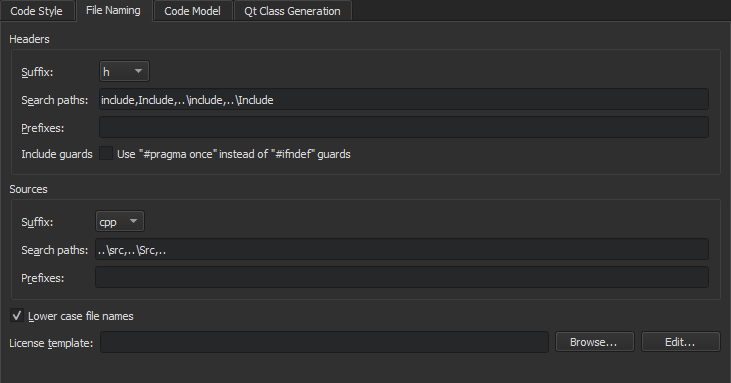
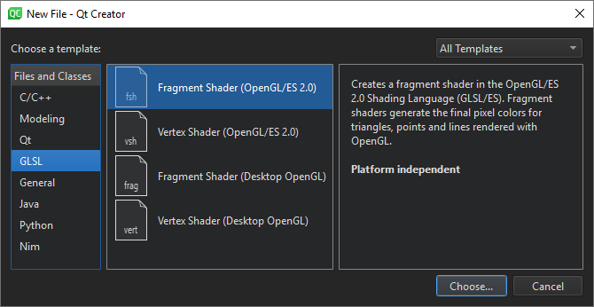

Creating Files
You can use wizard templates to add individual files to your projects. The following table lists the wizard templates for creating files.
| Category | Wizard Template | Purpose |
|---|---|---|
| C/C++ | C++ Class | C++ header and source file for a new class that you can add to a C++ project. |
| C/C++ Source File | C++ source file that you can add to a C++ project. | |
| C/C++ Header File | C++ header file that you can add to a C++ project. | |
| Modeling | State Chart | State Chart XML (SCXML) file that contains boilerplate code for state machines. You can use the classes in the Qt SCXML module to embed state machines created from the files in Qt applications. |
| Model | Universal Modeling Language (UML) style model with a structured diagram. However, the model editor uses a variant of UML and provides only a subset of properties for specifying the appearance of model elements. For more information, see Modeling. | |
| Scratch Model | Scratch model using a temporary file. | |
| Qt | Qt Item Model | Source and header files that you can use to create classes derived from QAbstractItemModel, QAbstractTableModel, or QAbstractListModel. |
| Qt Designer Form Class | Qt Designer form and a matching class for implementing a UI based on Qt widgets. | |
| Qt Designer Form | Qt Designer form for Qt widget based projects. This is useful if you already have an existing class for the UI logic. | |
| Qt Resource File | Resource file for storing binary files in the application executable. | |
| QML File (Qt Quick 2) | QML file that imports Qt Quick 2.0 for use in Qt Quick projects. | |
| Qt Quick UI File | UI file (.ui.qml) and the corresponding implementation file (.qml) for use in Qt Quick projects. | |
| JS File | JavaScript file that you can use to write the application logic in Qt Quick projects. | |
| GLSL | Fragment Shader (OpenGL/ES 2.0) | Fragment shader that generates the final pixel colors for triangles, points, and lines rendered with OpenGL. You can use it in both Qt Quick projects and Qt widget based projects. |
| Vertex Shader (OpenGL/ES 2.0) | Vertex shader that transforms the positions, normals, and texture coordinates of triangles, points, and lines rendered with OpenGL. You can use it in both Qt Quick projects and Qt widget based projects. | |
| Fragment Shader (Desktop OpenGL) | Fragment shader for use in both Qt Quick projects and Qt widget based projects. | |
| Vertex Shader (Desktop OpenGL) | Vertex shader for use in both Qt Quick projects and Qt widget based projects. | |
| General | Empty File | Empty file that you can save with any filename extension. |
| Scratch Buffer | Scratch buffer that uses temporary files. You can create this type of files for temporarily storing information that you do not intend to save | |
| Java | Java File | Java class files that you can use to create Java classes. |
| Python | Python Class | Python class file. |
| Python File | Python script file using UTF-8 encoding. | |
| Nim (experimental) | Nim Script File | Empty Nim script file using UTF-8 encoding. |
| Nim File | Empty Nim source file using UTF-8 encoding. |
Creating C++ Classes
The C++ Class Wizard allows you to create a C++ header and source file for a new class that you can add to a C++ project. Specify the class name, base class, and header and source files for the class.
The wizard supports namespaces. To use a namespace, enter a qualified class name in the Class name field. For example: MyNamespace::MySubNamespace::MyClass. The wizard suggests existing namespaces and class names as you type.

The names of the header and source file are based on the class name. To change the default suffix of a file, select Edit > Preferences > C++ > File Naming.

In the License template field, you can use predefined wizard variables to specify the path and filename of the license to use in the source and header files.
You can create your own project and class wizards. For more information, see Adding New Custom Wizards.
Creating Resource Files
Qt Creator supports the Qt Resource System, which is a platform-independent mechanism for storing files in the application's executable.

The wizard creates a resource collection file (.qrc) that you can manage in the resource editor.

Select Add Files to locate and add individual files.
To list the folders and files in ascending alphabetic order in the source tree, select Sort Alphabetically in the context menu.
By default, resources are accessible in the application under the same file name as they have in the source tree, with a :/ prefix, or by a URL with a qrc scheme. To specify a path prefix for all files in the .qrc file, select Add Prefix and enter the prefix in the Prefix field.
Some resources need to change based on the user's locale, such as translation files or icons. You can specify a locale in the Language field.
Select Remove to remove the selected file from the resource collection. In the Remove File dialog, select the Delete file permanently check box to remove the file from the file system. To remove files that cannot be found in the file system, select Remove Missing Files.
The above functions are also available in the context menu in the Projects view.
Creating OpenGL Fragment and Vertex Shaders
Qt provides support for integration with OpenGL implementations on all platforms, which allows you to display hardware accelerated 3D graphics alongside a more conventional user interface. For more information, see Qt GUI.
You can use the QOpenGLShader class to compile OpenGL shaders written in the OpenGL Shading Language (GLSL) and in the OpenGL/ES Shading Language (GLSL/ES). QOpenGLShader and QOpenGLShaderProgram shelter you from the details of compiling and linking vertex and fragment shaders.
You can use Qt Creator code editor to write fragment and vertex shaders in GLSL or GLSL/ES. The code editor provides syntax highlighting and code completion for the files.
